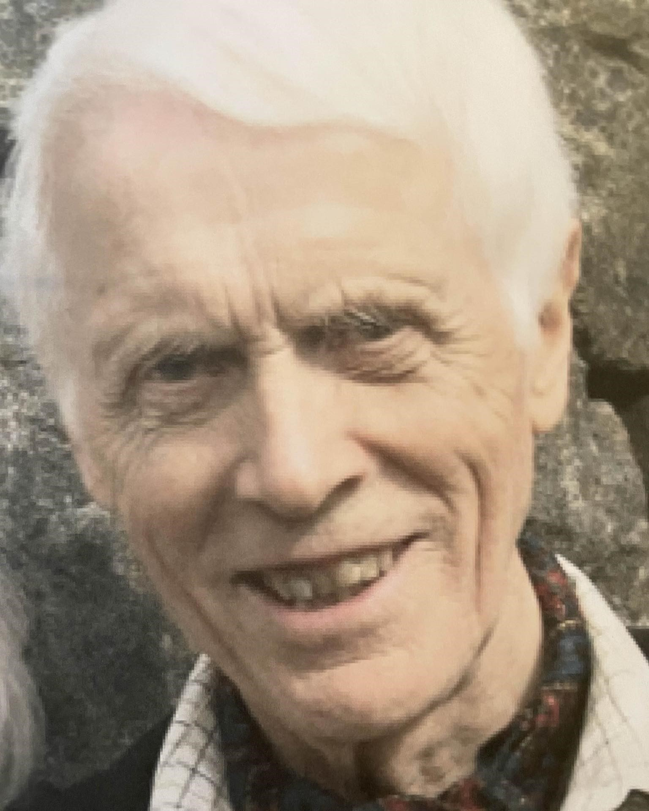

Vår gode kollega og venn ved Universitetet i Agder og tidligere høyskoler sovnet stille inn på Marnarheimen 2. juli og ble stedt til hvile fra Øyslebø Kirke 12. juli under stor deltakelse, så å si 92 år gammel. Han vil bli husket som en dyktig realist fra Universitetet i Oslo som kom til Kristiansand Lærerhøgskole etter 27 år ved Halden Lærerhøgskole. Og som en meget datakyndig medarbeider for Seniorportalen agderkultur.no som fremdeles drives i tilknytning til Seniorsentrene ved UiA. Førsteamanuensis Skaar hadde også tidlig sin egen podkast. Militærtjenesten tok han på Tromøya og Sola Flystasjon.
Med hovedfag i kjemi og ellers fagene fysikk og matematikk og praksis bl.a. fra Kjeller, og Ås hos professor Log, ble han valgt ut av KUD til å delta i en ekspertgruppe ledet av direktør Sigurd Birkelund. Den gav råd til Statsråd Kjell Bondevik om hvilke distriktshøyskoler som på faglig grunnlag kunne bli de første til å starte opp alt i 1969. Det ble Agder, Rogaland og Møre og Romsdal. Det hersker ingen tvil om at Skaar fra Agder, da bosatt i Oslo, gikk grundig og objektivt til verks. Det var hans natur.

Så lenge Olav Bjørn kunne møtte han til de årlige Artiumskulltreffene på Restaurant Pider Ro i Kristiansand for Jubileumsrussen fra 1951. For byens naturlig nok utsatte 300 års Jubileum i 1941. I 1951 var Olav Bjørn en av oss forfekterne for at Kristenrussen absolutt ikke burde nedlegges, hverken da eller for fremtiden, slik den faktisk ble året før. Der var en nedleggelse som senere ble beklaget av tidligere lagssekretær sentralt i Oslo, Erling Hansen Utne. Da han som biskop emeritus Erling Utnem i Kristiansand erklærte: «Der tok vi feil!».
Olav Bjørns kristne tro var sterk gjennom livet, men som vitenskapelig utdannet kunne han ha enkelte reservasjoner mot for bokstavtro forkynnelse. Hans yndlingssalme var» Å leva det er å elska».
Det var også hans natur å påse at hva han gjorde og sto for skulle være vel overveid og «Godkjent, Innafor». Det gjaldt også som retningssnor for barn og barnebarn. Bestefar Olav Bjørns lune humor og beskjedenhet og morsomme ettertenksomhet ble også piffet opp med mer eller mindre intrikate tryllerier, som moret og utfordret mange i familien. De nøt også godt av hans kunnskaper som tutor i matematikk og fysikk. Trylling: nå sist i Minnestunden, da via møtelederen, sønnen Per Åge og datteren Merethe. Der var det også mange venner, og familie fra hans kone Aase, født Aanonsen sin side, fra Risør, og Halden. Aase mintes sin mann med takknemlighet for et langt og godt liv og for alle reisene de gjorde sammen. De giftet seg i 1969, etter å ha hatt et godt øye til hverandre fra lenge før.
Alle var enige om at livsreisen til Olav Bjørn var «Godkjent. Innafor!»
Thor Einar Hanisch, UiA og Agderkultur